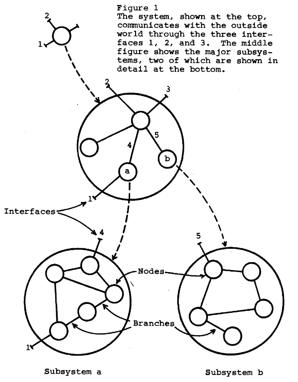

How do committees invent, Conway, M. E.
Table of Contents
- 1. Stages of design
- 2. System
- 2.1. System design
- 2.1.1. The definition of the design team already means design decisions for the system or product
- 2.1.2. Flexibility of organization is important to effective design
- 2.1.3. Systems tend to disintegrate
- 2.1.4. Systems as a graph
- 2.1.5. The efficiency of communication can increase system design quality
- 2.1. System design
- 3. Parkison's law
- 4. Conway's law
1. Stages of design
happens in two stages.
- Define the ,
2. System
A whole composed by parts for a common .
2.1. System design
The intellectual activity of creating a useful whole from diverse parts.
It follows, in general, the steps:
- Drawing according the the real world and other rules
- Choice of a preliminary design
- Organization of the design activity and delegation of tasks
- Coordination among delegated tasks
- Consolidation of subdesign into a single design
2.1.1. The definition of the design team already means design decisions for the system or product
The team definition is going to define the paths, which means boundaries to what it can accomplish. So just a class of possible designs are available for it. If two pieces of a system are developed by two different teams, there is an assumption they do not need to have a high bandwidth communication between these two teams, the two things they will build cannot be a single piece.
So a design team can't be organized and unbiased at the same time.
should take it into consideration.
- A org structure is based on communication paths
are defined by the communication paths it elicits. What the team can achieve depends on it.
- There is an homomorphism between the design team and the system design
There is an homomorphism between the design team and the system design. In many cases, if one group design every subsystem, it becomes 1:1.
Example: the Fortran and COBOL compilers. 8 people for both projects. They split 5 for Fortran and 3 for Cobol. The first end-up as a 5 phases compiler, the second as a three phases one.
- There is an homomorphism between the design team and the system design
2.1.2. Flexibility of organization is important to effective design
Systems will never start as optimal, because of Conway's law: systems image their design group, flexibility of designers organization is needed.
When we start a system, we need to decide the design group structure. However, it is likely they will know a better way to do the system, and consequently need to reorg the design team (the communication paths) to enable it. It is needs to do so.
- We need to reward managers for keeping their org lean and flexible
A philosophy that goes against Parkison's law. Do not assume that adding manpower will increase .
2.1.3. Systems tend to disintegrate
It happens in three steps, the first two are controllable, and the last is the consequence of Conway's law: systems image their design group.
- The realization by the first designers that the system will be large, and the pressure to involve more people, will make the allocation of too many people in the design effort
- A large design group will cause their communication to disintegrate
- The Conway's Law
- The arrangement of the design effort will disintegrate systems
It means combining with the bad incentive of Parkison's law. It happens when the of the system reaches the limit of the initial designer.
In industry, there will be a survival reason to do it due to strategies: failing on it without delegation is an easy "fault" to spot in a , it means not applying all his resources.
- Communication limits fragments teams which fragments systems
The system architecture will follow from the team structure that will happen due to communication limits.
2.1.4. Systems as a graph
Nodes as subsystems. Interfaces to communicate to other systems. representation.

2.1.5. The efficiency of communication can increase system design quality
Efficient between is crucial to enable better System design.
> Research which leads to techniques permitting more efficient communication among designers will play an extremely important role in the technology of system management.
- System management
Managing systems development and their design teams. It emerged because of the natural movement of Systems tend to disintegrate.
3. Parkison's law
As long as the prestige of a is tied to its , they will be motivated to expand the organization.
4. Conway's law
System design reflects the structure of the group who builds it.